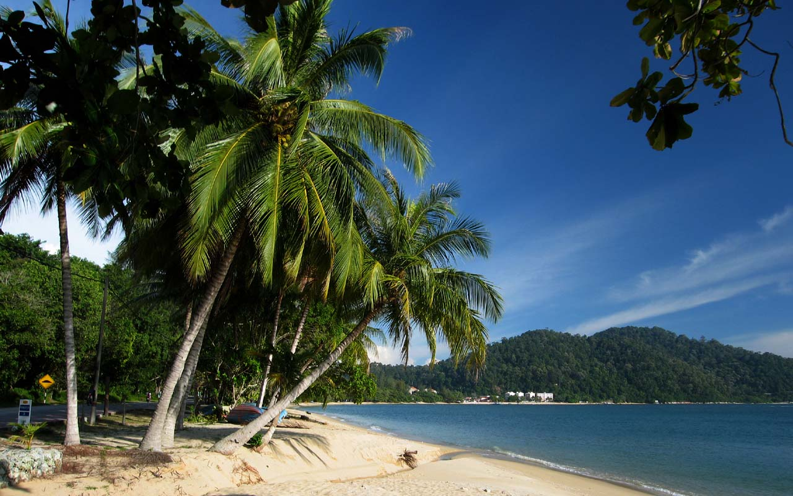
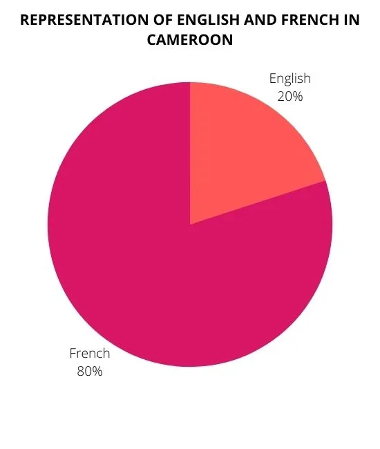
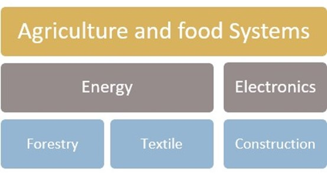
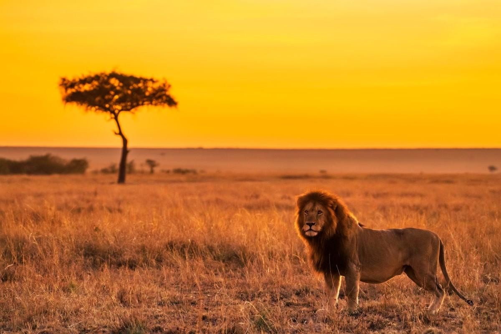
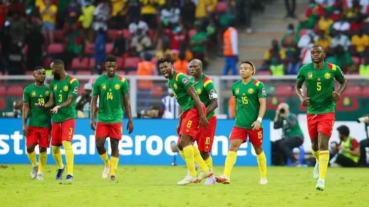

ABOUT US
Welcome to CAMEROON
Where the rhythm of life pulses through rainforests. It stretches across the
golden savannas, and dances along the shores of the Atlantic Ocean.
Immerse yourself in a tapestry of cultures from cities to remote villages,
and embark on a journey of discovery through the corner of Africa.
Cameroon, officially known as the Republic of Cameroon,
is a country
located in Central Africa,
showcasing a rich tapestry of cultural diversity,
breathtaking landscapes, and a fascinating blend of traditional
and
modern influences. Bordered by Nigeria to the west,
Chad to the
northeast, the Central African
Republic to the east, Equatorial Guinea,
Gabon, and the Republic of the Congo to the south,
and the
Gulf of Guinea to the southwest,
Cameroon is often referred to as "Africa in Miniature"
due to its diverse ecosystems and cultures.

Geographical and natural wonders
Cameroon's geography is remarkably diverse,
encompassing coastal plains, mountain ranges,
dense rainforests,
and savannahs.The iconic Mount
Cameroon, an active volcano and
the highest peak in West Africa,
dominates the landscape.
The country is crisscrossed by
numerous rivers, including the
majestic Sanaga and the Wouri,
providing fertile plains and
contributing to the nation's agricultural richness.
Embark on a virtual journey through Cameroon's diverse
ecosystems, from the volcanic majesty of Mount Cameroon to
the lush rainforests teeming with exotic wildlife.
Immerse yourself in the breathtaking scenery, where pristine
rivers wind through fertile plains, and the call of rare bird
species echoes in dense canopies.

Cultural mosaic
The people of Cameroon, known as Cameroonians, represent a
mosaic of ethnicities, languages, and traditions.
With over 250
ethnic groups, including the Bamileke, Fulani,
and Bantu communities,
the country is a vibrant kaleidoscope of
cultures.
Each ethnic group contributes its unique customs,
dances,
music, and traditional attire to the national identity.
Uncover the beauty of Cameroon's cultural mosaic,
where over
250 ethnic groups contribute to a
vibrant tapestry of traditions,
languages, and folklore.
From the rhythmic beats of traditional
dances
to the intricate patterns of indigenous attire,
Cameroon's cultural richness is a testament to the
harmonious
coexistence of diverse communities.

Languages and heritage
Cameroon is officially bilingual, with English and French
as the official languages. This linguistic duality reflects
the historical influences of British and French colonial rule.
Additionally, numerous indigenous languages, such as Bambara,
Fulfulde, and Duala, contribute to the linguistic diversity of
the nation.Explore the linguistic diversity of Cameroon, where
English and French harmonize alongside a myriad of indigenous
languages. Delve into the history and heritage that shaped this
nation, blending colonial influences with ancient traditions,
resulting in a unique identity that is distinctly Cameroonian.

Economic Diversity
Discover the economic heartbeat of Cameroon, where agriculture,
oil production, and mining converge to form a dynamic landscape.
Explore the country's contribution to global exports, from the prized
cocoa and coffee plantations to its growing prominence in the oil
and mining sectors.Cameroon's economy is diverse, encompassing
agriculture,
oil production, mining, and services. Agriculture plays a
significant role, with cocoa, coffee, and oil palm being major
exports. The country's natural resources, including oil reserves
in the coastal regions and minerals like bauxite and iron ore,
contribute to its economic vitality.

Wildlife and Conservation
Celebrate Cameroon's commitment to preserving its natural heritage.
Learn about the country's dedication to wildlife conservation,
with national parks and sanctuaries providing a sanctuary for
endangered species, including elephants, gorillas, and chimpanzees.
Cameroon boasts a rich biodiversity, housing various species of
flora and fauna. The lush rainforests are home to diverse wildlife,
including elephants, gorillas, chimpanzees, and a plethora of bird
species. The government and various conservation organizations are
actively engaged in preserving the country's natural heritage through
national parks and wildlife sanctuaries.

Sports and recreation
Feel the pulse of Cameroon's sporting passion, particularly
in the realm of football. Cheer on the "Indomitable Lions",
the national football team, and witness the nation's prowess
on the international sports stage.Sports, particularly football
(soccer), hold a special place in the hearts of Cameroonians.
The national football team, known as the "Indomitable Lions",
has achieved success on the international stage. Additionally,
Cameroon has hosted and excelled in major African and international
sporting events.